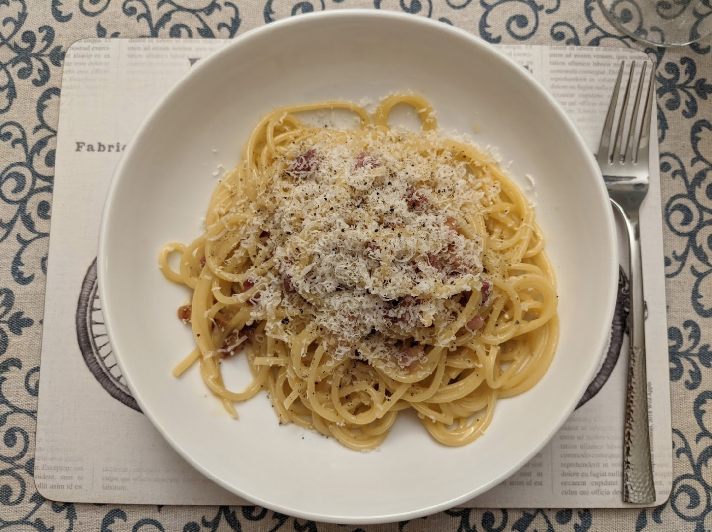

Mmmmm creamy (but don't even think about adding cream).

Ingredients
200g spaghetti (and some of the pasta water)
2 eggs
40g parmigiano
75g pancetta
Instructions
Boil the pasta water and get the spaghetti cooking (remember to add salt).
Whisk the eggs in a bowl with a fork, and add in the grated cheese and black pepper.
Fry up the pancetta in a pan large enough to hold the final dish.
Add the spaghetti when it's ready and mix it together, adding a spoon or two of some of the
pasta water.
Remove from the heat, and add the egg and cheese mixture, stirring and tossing it all together
until it's glossy.
Serve with grated parmigiano and more black pepper.